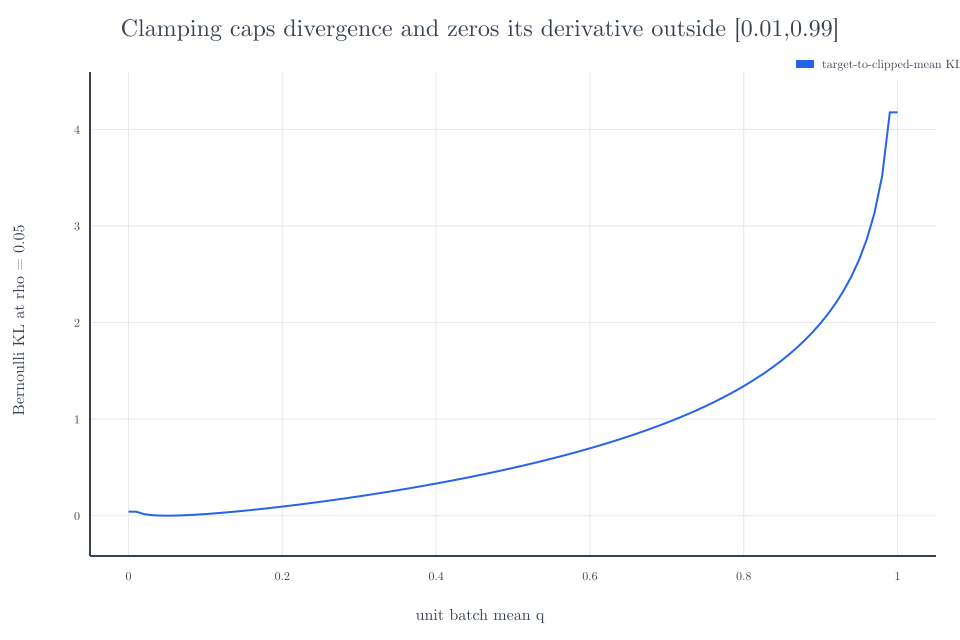
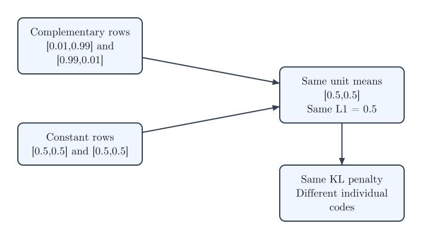
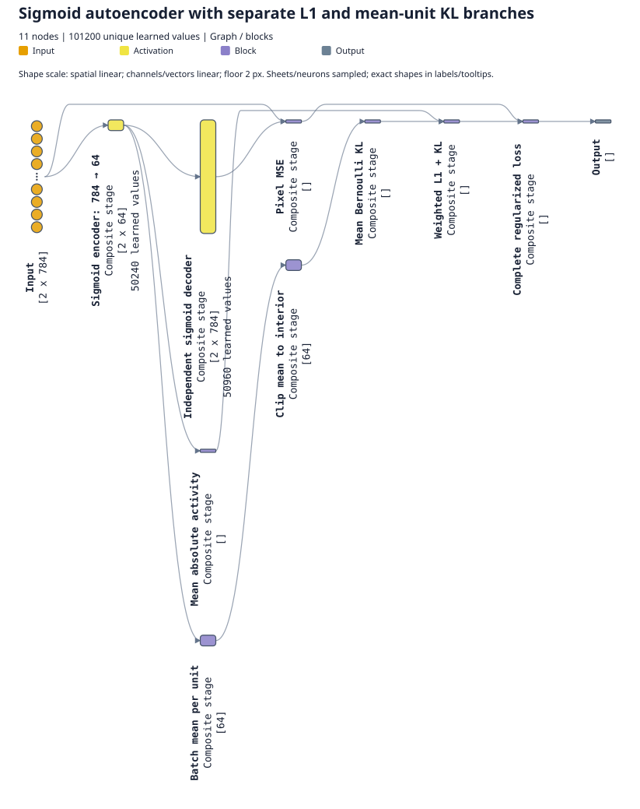
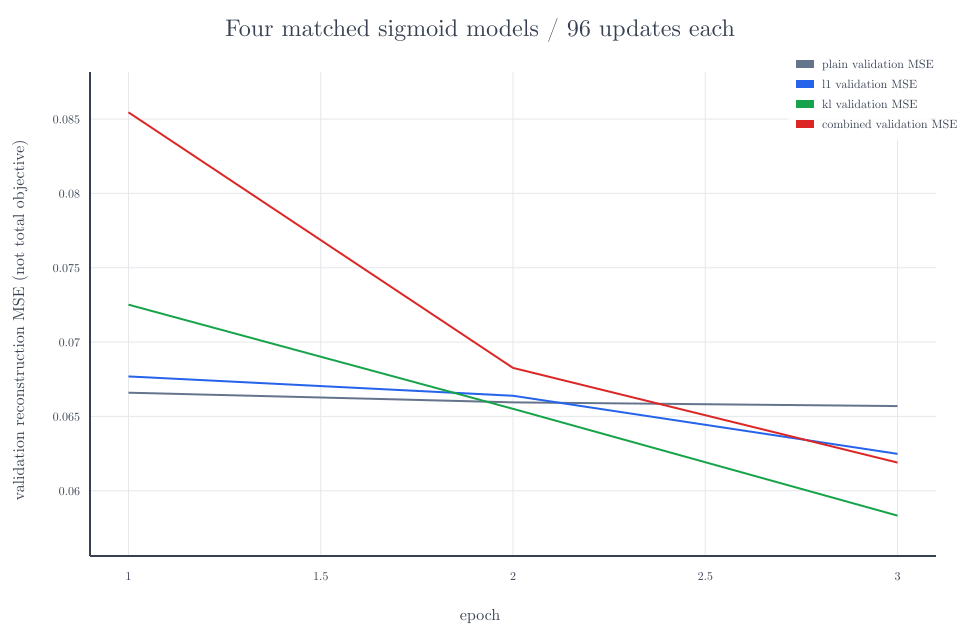
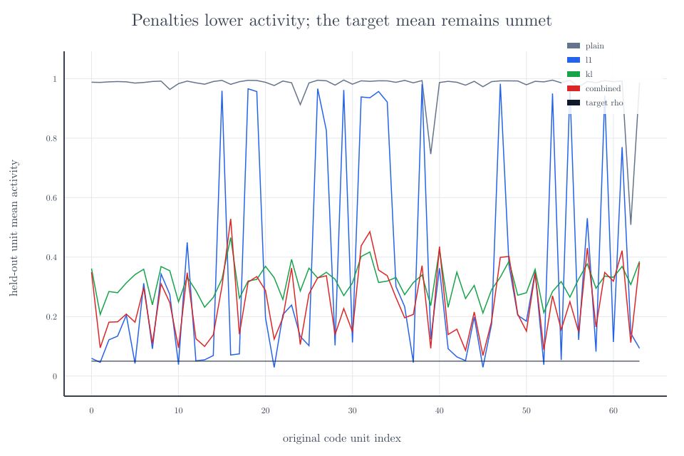
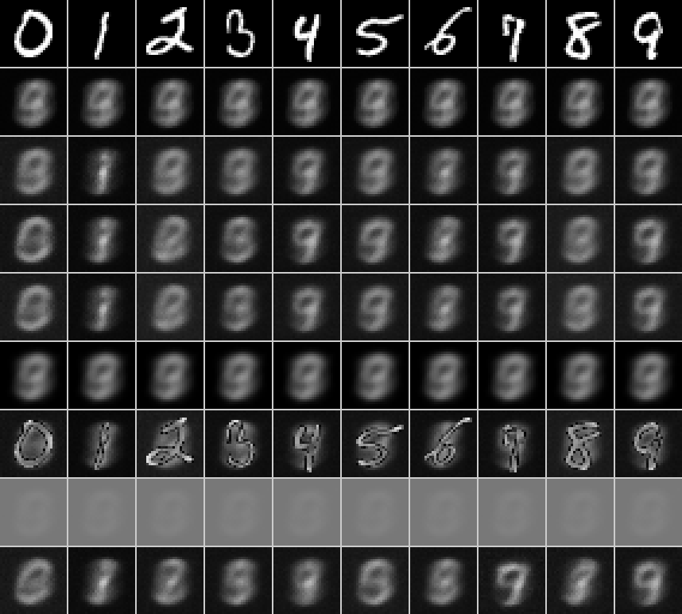

Sparse Autoencoders: Activity L1 and Mean-Unit KL
Abstract
A reconstruction model can spread information across many active code units. Activation penalties encourage lower activity while retaining a differentiable encoder. This report separates mean absolute activity from Bernoulli KL on batch-averaged units, derives their gradients and clipping conventions, then trains the original four matched 784–64–784 sigmoid models on genuine MNIST. Plain, L1, KL and combined variants share initialization, batch order and ninety-six Adam updates each. The KL-only run has the lowest observed test MSE, 0.06077, versus 0.06795 for plain and 0.06780 for the fitting mean. Penalties lower activity but do not reach the target mean 0.05; mean-unit KL does not itself guarantee sparse codes for individual observations. The results are a short single-seed comparison, without a downstream classification or compression claim.
Two different activation penalties
For image rows X, code \(H=\sigma(XW_e+b_e)\in(0,1)^{B\times F}\) and reconstruction \(\hat X=\sigma(HW_d+b_d)\), define
The target \(\rho=0.05\), clipping \(\epsilon=10^{-5}\) and unit-mean KL follow this small source experiment. [Andrew Ng's sparse-autoencoder notes](https://web.stanford.edu/class/cs294a/sparseAutoencoder.pdf) explain the mean-activity KL construction. Here KL is averaged over units rather than summed, MSE is averaged over pixels, and activation L1 replaces any weight-decay term. Coefficients therefore cannot be transferred unchanged from differently normalized objectives. Neither penalty directly penalizes weights or forces exactly zero coordinates.
#include <dm/dm.hpp>
int main() {
std::filesystem::create_directories("build");
dm::graphics::Diagram d(54, 1100);
d.node("x", {0, 0}, "Image rows X\n784 pixels")
.node("h", {6, 0}, "Sigmoid encoder H\n64 activities per image")
.node("r", {12, 0}, "Independent sigmoid decoder\n784 reconstructed pixels")
.node("a", {0, -3}, "Activation L1\nMean absolute activity")
.node("k", {6, -3}, "Mean-unit KL\nBatch mean → clip → target KL")
.node("m", {12, -3}, "Pixel MSE\nClean image target")
.node("l", {6, -6}, "Complete objective\nPixel MSE + weighted L1 + KL")
.edge("x", "h")
.edge("h", "r")
.edge("h", "a")
.edge("h", "k")
.edge("r", "m")
.edge("x", "m")
.edge("a", "l")
.edge("k", "l")
.edge("m", "l")
.save_svg("build/sparse_method.svg");
}
models::ActivationSparsity and SparseAutoencoder are canonical C++ components. Populated
handles, including nested penalty results, own their lifetimes and retain gradients. Float32
constants, complements and bounds reproduce the source's rounding; Float64 keeps double
precision. Inputs and weights are checked for finite valid geometry/options before parameter
creation. Tiny signed KL residuals can occur from rounding near its minimum. The core accepts
signed finite codes too; then KL concerns clipped means rather than raw probabilities.
This report's model uses sigmoid codes throughout.
A four-entry hand calculation, and clipping at the extremes
For code rows [0.1,0.3] and [0.3,0.5], unit means are [0.2,0.4] and mean absolute activity is 0.3. With target 0.2, the first KL term is zero; the second is \(0.2\log(0.2/0.4)+0.8\log(0.8/0.6)\). Averaging the two terms gives about 0.0457581. At α=0.1, β=0.2, the first unit's code derivatives are 0.025; the second unit's are 0.025+0.2(−0.2/0.4+0.8/0.6)/4 = 0.0666667. These include both penalties, not reconstruction.
For the source fixture, three rows contain unit means 0, 0.05, 0.6 and 1. The extremes clip and receive zero KL gradient, whereas L1 still acts on nonzero activities. The program checks all twelve original Float32 partials and the hand example's four Float64 partials. The curve uses a larger visible clamp ε=0.01 solely to show the constant tails; training keeps ε=1e-5.
#include <dm/dm.hpp>
int main() {
namespace n = dm::nn;
const auto type = n::DType::Float64;
const auto h = n::tensor({.1, .3, .3, .5}, {2, 2}, type).requires_grad_();
const auto p = n::models::ActivationSparsity(h, .1, .2, .2);
const auto gradient = n::grad(p.total, {h})[0];
const double expected_kl = (.2 * std::log(.2 / .4) + .8 * std::log(.8 / .6)) / 2;
const auto expected = n::tensor({.025, 1. / 15, .025, 1. / 15}, {2, 2}, type);
if (std::abs(p.l1.item() - .3) > 1e-14 || std::abs(p.kl.item() - expected_kl) > 1e-14 ||
n::max(n::abs(gradient - expected)).item() > 1e-14)
return 1;
std::print(
"Hand L1 {:.8f}, KL {:.8f}, total {:.8f}; derivatives {}.\n\n",
p.l1.item(),
p.kl.item(),
p.total.item(),
gradient.values_str());
const std::vector<float> values{0, .05f, .2f, 1, 0, .05f, .6f, 1, 0, .05f, 1, 1};
const auto source = n::from_vector(values, {3, 4}).requires_grad_();
const auto fixture = n::models::ActivationSparsity(source, .1f, .2f);
const auto partials = n::grad(fixture.total, {source})[0].to_vector<float>();
std::print(
"| source unit | mean | clipped mean | L1+KL derivative per row |\n|---:|---:|---:|---:|\n");
for (int j = 0; j < 4; ++j) {
double q = 0;
for (int b = 0; b < 3; ++b)
q += values[b * 4 + j] / 3.;
for (int b = 0; b < 3; ++b) {
double expected = values[b * 4 + j] == 0 ? 0 : double(.1f) / 12;
if (q > 1e-5f && q < 1.f - 1e-5f)
expected += double(.2f) * (-double(.05f) / q + double(1.f - .05f) / (1 - q)) / 12;
if (std::abs(partials[b * 4 + j] - expected) > 3e-7)
return 1;
}
std::print(
"| {} | {:.8f} | {:.8f} | {:.8f} |\n", j, q, fixture.clipped_mean.at({j}), partials[j]);
}
std::vector<double> means, kl;
for (int i = 0; i <= 100; ++i) {
means.push_back(i / 100.);
kl.push_back(
n::models::ActivationSparsity(n::full({1, 1}, means.back(), type), 0, 1, .05, .01)
.kl.item());
}
dm::graphics::RPlot::create()
.lines(means, kl, "target-to-clipped-mean KL", {37, 99, 235}, 2.)
.x_label("unit batch mean q")
.y_label("Bernoulli KL at rho = 0.05")
.title("Clamping caps divergence and zeros its derivative outside [0.01,0.99]")
.save_svg("build/sparse_penalty.svg");
}Hand L1 0.30000000, KL 0.04575811, total 0.03915162; derivatives [[0.025, 0.0666667], [0.025, 0.0666667]].
| source unit | mean | clipped mean | L1+KL derivative per row |
|---|---|---|---|
| 0 | 0.00000000 | 0.00001000 | 0.00000000 |
| 1 | 0.05000000 | 0.05000000 | 0.00833333 |
| 2 | 0.60000001 | 0.60000002 | 0.04652778 |
| 3 | 1.00000000 | 0.99998999 | 0.00833333 |

For \(\psi(q)=\rho\log(\rho/q)+(1-\rho)\log((1-\rho)/(1-q))\), \(\psi'(q)=(q-\rho)/(q(1-q))\) and \(\psi''(q)=\rho/q^2+(1-\rho)/(1-q)^2>0\) in the interior. The minimum is at q=ρ. Away from zero/clipping kinks, the penalty derivative is
At H=0 the absolute-value derivative is zero. Clipping at an endpoint uses the inclusive indicator shown; no differentiability is claimed there. For complete model gradients, set \(D=2(\hat X-X)\odot\hat X\odot(1-\hat X)/(Bd)\), and let G be the expression above. Then the encoder delta is \((DW_d^\top+G)\odot H\odot(1-H)\), with the usual transposed input products and row sums for encoder/decoder weights and biases. The source evaluates both penalties even for zero coefficients, so no branch silently changes the network.
Batch means do not specify individual codes
Rows [0.01,0.99] and [0.99,0.01] have the same unit means and L1 as two constant rows [0.5,0.5]. Their KL and L1 penalties therefore agree despite different activity patterns. Also, computing KL separately on each row gives a larger mean than computing it once on the pooled means, by convexity when all means lie inside the clipping interval. Global clipping can destroy this convexity outside the interval, so that inequality is not asserted for arbitrary signed codes. Gradient magnitudes also depend on the actual minibatch size, including the final eight records.
#include <dm/dm.hpp>
int main() {
namespace n = dm::nn;
const auto type = n::DType::Float64;
const auto variable = n::tensor({.01, .99, .99, .01}, {2, 2}, type);
const auto pooled = n::models::ActivationSparsity(variable, .1, .2, .2);
const auto uniform = n::models::ActivationSparsity(n::full({2, 2}, .5, type), .1, .2, .2);
double separate = 0;
for (int row = 0; row < 2; ++row)
separate +=
n::models::ActivationSparsity(n::take_rows(variable, {row}), .1, .2, .2).kl.item() / 2;
if (pooled.l1.item() != uniform.l1.item() || pooled.kl.item() != uniform.kl.item() ||
separate <= pooled.kl.item())
return 1;
std::print(
"| aggregation | L1 | mean-unit KL |\n|---|---:|---:|\n| pooled complementary rows | {:.8f} "
"| {:.8f} |\n| constant rows | {:.8f} | {:.8f} |\n| KL averaged after splitting rows | "
"{:.8f} | {:.8f} |\n",
pooled.l1.item(),
pooled.kl.item(),
uniform.l1.item(),
uniform.kl.item(),
pooled.l1.item(),
separate);
dm::graphics::Diagram d(55, 1100);
d.node("a", {0, 0}, "Complementary rows\n[0.01,0.99] and [0.99,0.01]")
.node("b", {0, -3}, "Constant rows\n[0.5,0.5] and [0.5,0.5]")
.node("q", {8, -1.5}, "Same unit means [0.5,0.5]\nSame L1 = 0.5")
.node("k", {8, -4.5}, "Same KL penalty\nDifferent individual codes")
.edge("a", "q")
.edge("b", "q")
.edge("q", "k")
.save_svg("build/sparse_batch.svg");
}| aggregation | L1 | mean-unit KL |
|---|---|---|
| pooled complementary rows | 0.50000000 | 0.19274476 |
| constant rows | 0.50000000 | 0.19274476 |
| KL averaged after splitting rows | 0.50000000 | 1.80720784 |

Executed four-leaf model and objective branches
Every variant has independent encoder/decoder weights and 2×784×64+64+784 = 101,200 learned scalars in four tensors. There is no hard gate in this sigmoid code. The shape probe uses two observations to show the actual batch-mean branch. Its output is the complete regularized scalar objective; all reconstruction and penalty inputs remain in the traced graph. Graph style, Blocks detail, shared linear scales, a two-pixel visibility floor, six sampled planes and eight sampled neurons are explicit; exact shapes remain in labels and tooltips.
#include <dm/dm.hpp>
int main() {
namespace n = dm::nn;
n::ParameterStore p(1601);
n::Module model(
[&](const n::Tensor& x) {
const auto net = n::models::SparseAutoencoder(p, x, .05f, .05f);
n::model_stage("Sigmoid encoder: 784 → 64", x, net.code);
n::model_stage("Independent sigmoid decoder", net.code, net.reconstruction);
n::model_stage("Pixel MSE", std::vector<n::Tensor>{net.reconstruction, x}, net.mse);
n::model_stage("Mean absolute activity", net.code, net.penalty.l1);
n::model_stage("Batch mean per unit", net.code, net.penalty.unit_mean);
n::model_stage("Clip mean to interior", net.penalty.unit_mean, net.penalty.clipped_mean);
n::model_stage("Mean Bernoulli KL", net.penalty.clipped_mean, net.penalty.kl);
n::model_stage(
"Weighted L1 + KL",
std::vector<n::Tensor>{net.penalty.l1, net.penalty.kl},
net.penalty.total);
return n::model_stage(
"Complete regularized loss",
std::vector<n::Tensor>{net.mse, net.penalty.total},
net.loss);
},
"Sigmoid autoencoder with separate L1 and mean-unit KL branches");
n::ModelPlotOptions options;
options.style = n::ModelPlotStyle::Graph;
options.detail = n::ModelPlotDetail::Blocks;
options.max_neurons = 8;
options.sizing.spatial_scale = n::ModelPlotScale::Linear;
options.sizing.channel_scale = n::ModelPlotScale::Linear;
options.sizing.minimum_extent = 2;
options.sizing.max_planes = 6;
const auto figure = model.plot(n::zeros({2, 784}), options);
if (p.count() != 101200 || p.size() != 4 || figure.parameter_count() != 101200)
return 1;
figure.save_svg("build/sparse_architecture.svg");
std::print("| parameter | scalars |\n|---|---:|\n");
for (const auto& name : p.names())
std::print("| {} | {} |\n", name, p.at(name).numel());
}| parameter | scalars |
|---|---|
| encoder/W | 50176 |
| encoder/b | 64 |
| decoder/W | 50176 |
| decoder/b | 784 |

Genuine MNIST pools and provenance
Native preparation supplies the original balanced 1,000 fitting, 200 validation and 200 test images. Fit/validation IDs are disjoint official training records; held-out IDs are official test records. Pixels remain Float32 [0,1], flattened from [N,28,28,1] only at the dense model input. The source manifest and IDs are retained. Labels affect gallery columns, never fitting or selection.
#include <dm/dm.hpp>
int main() {
namespace n = dm::nn;
std::filesystem::create_directories("build");
const std::filesystem::path cache = dm::datasets::data_home();
dm::datasets::prepare_example_data("mnist-assets", cache.string());
const auto pools = n::models::LoadSaliency(cache / "saliency");
n::NamedTensors data;
std::print("| pool | images | per digit |\n|---|---:|---:|\n");
for (int split = 0; split < 3; ++split) {
const std::string name = split == 0 ? "fit" : split == 1 ? "validation" : "test";
data.emplace_back(name + "_images", pools[split].images);
data.emplace_back(name + "_source_ids", pools[split].source);
if (split == 2)
data.emplace_back("test_labels", pools[split].labels);
std::print(
"| {} | {} | {} |\n", name, pools[split].images.size(0), pools[split].images.size(0) / 10);
}
n::save_npz("build/sparse_data.npz", data);
std::filesystem::copy_file(
cache / "saliency" / "manifest.json",
"build/sparse_data_manifest.json",
std::filesystem::copy_options::overwrite_existing);
}| pool | images | per digit |
|---|---|---|
| fit | 1000 | 100 |
| validation | 200 | 20 |
| test | 200 | 20 |
Four matched fits, 384 explicit updates
Plain uses (α,β)=(0,0), L1 uses (0.05,0), KL uses (0,0.05), and combined uses (0.05,0.05). All four start at seed 1601 with byte-identical parameters. Batch-order seed 1607 and batch size 32 give the same records and order, including eight in the last batch. Each model runs three epochs and 96 Adam updates at learning rate 0.003, moments 0.9/0.999 and epsilon 1e-8.
Each variant selects its own checkpoint by its *own full regularized validation objective* in Float32, preserving the source. These totals have different penalty coefficients, so they are not directly comparable scores for selecting a variant. Test MSE and activity summaries below are descriptive held-out comparisons of the four prescribed configurations, not a hyperparameter search using test pixels. Fitting loss is pre-update, validation post-epoch. Every fitting record is used once per epoch; the full loop and actual optimizer calls are below.
#include <dm/dm.hpp>
int main() {
namespace n = dm::nn;
std::map<std::string, n::Tensor> data;
for (const auto& [key, value] : n::load_npz("build/sparse_data.npz"))
data.emplace(key, value);
const auto fit = data.at("fit_images"),
validation = data.at("validation_images").reshape({200, 784});
const auto ids = data.at("fit_source_ids").to_vector<int>();
std::vector<double> matched;
const std::vector<std::string> names{"plain", "l1", "kl", "combined"};
const std::vector<float> alpha{0, .05f, 0, .05f}, beta{0, 0, .05f, .05f};
const std::vector<dm::graphics::RGB> colors{
{100, 116, 139}, {37, 99, 235}, {22, 163, 74}, {220, 38, 38}};
auto plot = dm::graphics::RPlot::create();
std::print(
"| variant | epoch | fitting total | validation total | validation MSE | L1 | KL "
"|\n|---|---:|---:|---:|---:|---:|---:|\n");
for (int v = 0; v < 4; ++v) {
const std::string prefix = "build/sparse_" + names[v];
n::ParameterStore p(1601);
{
n::NoGradGuard guard;
n::models::SparseAutoencoder(p, n::zeros({1, 784}), alpha[v], beta[v]);
}
if (v == 0)
matched = p.flatten();
else if (p.flatten() != matched)
return 1;
p.save(prefix + "_initial.npz");
n::OptimizerConfig config;
config.kind = n::OptimizerKind::Adam;
n::Optimizer optimizer(p, .003, config);
n::BatchOrder order(1000, 32, 1607);
std::ofstream batches(prefix + "_batches.tsv");
batches << "epoch\tstep\trow\tsource_id\n";
double best = std::numeric_limits<double>::infinity();
int selected = 0, updates = 0;
std::vector<double> epochs, validation_mse;
for (int epoch = 1; epoch <= 3; ++epoch) {
order.begin_epoch();
double total = 0;
int seen = 0;
for (;;) {
const auto rows = order.next();
if (rows.empty())
break;
const auto images = n::take_rows(fit, rows), input = images.reshape({images.size(0), 784});
const auto net = n::models::SparseAutoencoder(p, input, alpha[v], beta[v]);
if (updates == 0 || updates == 31) {
n::GradOptions keep;
keep.retain_graph = true;
const auto derivative = n::grad(net.penalty.total, {net.code}, keep)[0];
n::save_npz(
prefix + (updates == 0 ? "_first_probe.npz" : "_partial_probe.npz"),
{{"images", images},
{"code", net.code},
{"unit_mean", net.penalty.unit_mean},
{"clipped_mean", net.penalty.clipped_mean},
{"penalty_gradient", derivative}});
}
if (updates == 0) {
n::GradOptions keep;
keep.retain_graph = true;
const auto gradients = n::grad(net.loss, p.parameters(), keep);
n::NamedTensors saved;
for (std::size_t i = 0; i < gradients.size(); ++i) {
const auto norm = n::sqrt(n::sum(n::square(gradients[i]))).item();
if (!std::isfinite(norm) || norm <= 0)
return 1;
saved.emplace_back(p.names()[i], gradients[i]);
}
n::save_npz(prefix + "_first_gradients.npz", saved);
n::save_npz(prefix + "_first_batch.npz", {{"images", images}});
}
const double value = net.loss.item();
if (!std::isfinite(value) || value < 0)
return 1;
optimizer.minimize(net.loss);
total += rows.size() * value;
seen += int(rows.size());
for (auto row : rows)
batches << epoch << '\t' << updates << '\t' << row << '\t' << ids[row] << '\n';
if (updates == 0)
p.save(prefix + "_first_update.npz");
++updates;
}
n::NoGradGuard guard;
const auto net = n::models::SparseAutoencoder(p, validation, alpha[v], beta[v]);
const double score = net.loss.item();
if (seen != 1000 || !std::isfinite(score))
return 1;
p.save(prefix + "_epoch" + std::to_string(epoch) + ".npz");
if (score < best) {
best = score;
selected = epoch;
p.save(prefix + "_best.npz");
}
epochs.push_back(epoch);
validation_mse.push_back(net.mse.item());
std::print(
"| {} | {} | {:.8f} | {:.8f} | {:.8f} | {:.8f} | {:.8f} |\n",
names[v],
epoch,
total / seen,
score,
net.mse.item(),
net.penalty.l1.item(),
net.penalty.kl.item());
}
if (updates != 96 || !batches)
return 1;
n::save_npz(
prefix + "_selection.npz",
{{"epoch", n::full({}, selected, n::DType::Int32)},
{"validation_loss", n::full({}, best, n::DType::Float32)}});
plot.lines(epochs, validation_mse, names[v] + " validation MSE", colors[v], 2.);
}
plot.x_label("epoch")
.y_label("validation reconstruction MSE (not total objective)")
.title("Four matched sigmoid models / 96 updates each")
.save_svg("build/sparse_learning.svg");
}| variant | epoch | fitting total | validation total | validation MSE | L1 | KL |
|---|---|---|---|---|---|---|
| plain | 1 | 0.09989782 | 0.06659344 | 0.06659344 | 0.97525144 | 3.44364834 |
| plain | 2 | 0.06948335 | 0.06594365 | 0.06594365 | 0.97990501 | 3.74677992 |
| plain | 3 | 0.06894525 | 0.06569229 | 0.06569229 | 0.97305739 | 3.80408883 |
| l1 | 1 | 0.13926353 | 0.09691333 | 0.06768733 | 0.58452010 | 1.22299075 |
| l1 | 2 | 0.09368410 | 0.08642478 | 0.06638698 | 0.40075600 | 0.85872352 |
| l1 | 3 | 0.08602927 | 0.08032273 | 0.06247875 | 0.35687953 | 0.70120025 |
| kl | 1 | 0.14014075 | 0.09038863 | 0.07251455 | 0.41588330 | 0.35748166 |
| kl | 2 | 0.08663299 | 0.07864014 | 0.06550837 | 0.34689194 | 0.26263532 |
| kl | 3 | 0.07705476 | 0.06995086 | 0.05832269 | 0.32353780 | 0.23256326 |
| combined | 1 | 0.16441527 | 0.11071025 | 0.08545166 | 0.29759794 | 0.20757370 |
| combined | 2 | 0.10229277 | 0.09244712 | 0.06826064 | 0.28501835 | 0.19871113 |
| combined | 3 | 0.09020492 | 0.08284509 | 0.06189271 | 0.25387999 | 0.16516761 |

Fresh deployment, activity and frozen-code controls
Fresh stores restore selected weights and evaluate all three pools. The saved components are [total,MSE,L1,KL], computed on each complete pool, as in the source. Inference for an image is independent of other batch rows; the KL objective is not. Exact repeat/standalone decoding, single-versus-batch agreement and immutable weights are checked. Zero and cyclically shifted codes retain each frozen decoder while removing or misaligning sample-specific content. These additional controls are not refitted. A fitting-only pixel mean is estimated separately.
#include <dm/dm.hpp>
int main() {
namespace n = dm::nn;
std::map<std::string, n::Tensor> data;
for (const auto& [key, value] : n::load_npz("build/sparse_data.npz"))
data.emplace(key, value);
const auto test = data.at("test_images").reshape({200, 784});
const auto mean = n::broadcast_to(
n::cast(
n::mean(
n::cast(data.at("fit_images").reshape({1000, 784}), n::DType::Float64), {0}, true),
n::DType::Float32),
test.shape());
n::save_npz("build/sparse_mean.npz", {{"mean", mean}});
const std::vector<std::string> names{"plain", "l1", "kl", "combined"};
const std::vector<float> alpha{0, .05f, 0, .05f}, beta{0, 0, .05f, .05f};
const std::vector<dm::graphics::RGB> colors{
{100, 116, 139}, {37, 99, 235}, {22, 163, 74}, {220, 38, 38}};
auto plot = dm::graphics::RPlot::create();
std::vector<double> units(64), target(64, .05);
std::iota(units.begin(), units.end(), 0.);
std::print(
"| variant | test MSE | mean activity | fraction <0.1 | zero-code MSE | shifted-code MSE "
"|\n|---|---:|---:|---:|---:|---:|\n");
for (int v = 0; v < 4; ++v) {
const std::string prefix = "build/sparse_" + names[v];
n::ParameterStore p(1601);
p.load(prefix + "_best.npz", false);
const auto before = p.flatten();
n::NoGradGuard guard;
n::NamedTensors saved;
for (const auto& name : {"fit", "validation", "test"}) {
const auto images = data.at(std::string(name) + "_images"),
input = images.reshape({images.size(0), 784});
const auto net = n::models::SparseAutoencoder(p, input, alpha[v], beta[v]);
saved.insert(
saved.end(),
{{std::string(name) + "_code", net.code},
{std::string(name) + "_reconstruction", net.reconstruction},
{std::string(name) + "_unit_mean", net.penalty.unit_mean},
{std::string(name) + "_components",
n::from_vector(
std::vector<float>{
net.loss.item<float>(),
net.mse.item<float>(),
net.penalty.l1.item<float>(),
net.penalty.kl.item<float>()},
{4})}});
}
n::save_npz(prefix + "_outputs.npz", saved);
p.save(prefix + "_model_arrays.npz");
const auto net = n::models::SparseAutoencoder(p, test, alpha[v], beta[v]),
repeat = n::models::SparseAutoencoder(p, test, alpha[v], beta[v]);
const auto decoded = n::dense(p, "decoder", net.code, 784, n::Activation::Sigmoid);
const auto single = n::models::SparseAutoencoder(p, n::take_rows(test, {0}), alpha[v], beta[v]);
if (n::max(n::abs(net.reconstruction - repeat.reconstruction)).item() != 0 ||
n::max(n::abs(net.reconstruction - decoded)).item() != 0 ||
n::max(n::abs(single.reconstruction - n::take_rows(net.reconstruction, {0}))).item() > 1e-6)
return 1;
const auto zero = n::dense(p, "decoder", n::zeros({200, 64}), 784, n::Activation::Sigmoid);
const auto shifted = n::dense(
p,
"decoder",
n::concat({n::slice_axis(net.code, 0, 1, 200), n::slice_axis(net.code, 0, 0, 1)}, 0),
784,
n::Activation::Sigmoid);
n::save_npz(
prefix + "_controls.npz",
{{"zero_reconstruction", zero}, {"shifted_reconstruction", shifted}});
auto score = [&](const n::Tensor& y) {
return n::mse(n::cast(y, n::DType::Float64), n::cast(test, n::DType::Float64)).item();
};
const double activity = n::mean(n::cast(net.code, n::DType::Float64)).item(),
low = n::mean(n::cast(n::less(net.code, .1), n::DType::Float64)).item();
std::print(
"| {} | {:.9f} | {:.6f} | {:.6f} | {:.9f} | {:.9f} |\n",
names[v],
score(net.reconstruction),
activity,
low,
score(zero),
score(shifted));
plot.lines(units, net.penalty.unit_mean.to_vector<double>(), names[v], colors[v], 1.5);
if (before != p.flatten())
return 1;
}
plot.lines(units, target, "target rho", {15, 23, 42}, 1.)
.x_label("original code unit index")
.y_label("held-out unit mean activity")
.title("Penalties lower activity; the target mean remains unmet")
.save_svg("build/sparse_activities.svg");
std::print(
"Fitting-mean MSE {:.9f}; all restore/repeat/decode/batch/immutable checks pass.\n",
n::mse(n::cast(mean, n::DType::Float64), n::cast(test, n::DType::Float64)).item());
}| variant | test MSE | mean activity | fraction <0.1 | zero-code MSE | shifted-code MSE |
|---|---|---|---|---|---|
| plain | 0.067947765 | 0.975630 | 0.002109 | 0.222081206 | 0.068097564 |
| l1 | 0.064767495 | 0.351789 | 0.432891 | 0.216517574 | 0.068079176 |
| kl | 0.060774161 | 0.315958 | 0.156094 | 0.213551380 | 0.067903786 |
| combined | 0.064606958 | 0.246206 | 0.286641 | 0.210341197 | 0.070391737 |
Fitting-mean MSE 0.067798074; all restore/repeat/decode/batch/immutable checks pass.

The original test MSEs are 0.06795, 0.06477, 0.06077 and 0.06461 for plain, L1, KL and combined, respectively. KL-only has the lowest observed reconstruction error, about 10.4% below the fitting mean's 0.06780. L1 has the largest fraction below 0.1 (0.4329), whereas combined has the lowest mean activity (0.2462). Those summaries rank different properties. Even the combined mean is well above ρ=0.05. Shifting KL codes raises MSE to 0.06790, near the fitting-mean baseline, so aligning its code with the image contributes to reconstruction. The plain model changes only from 0.06795 to 0.06810 under the same shift. Zero codes degrade every model strongly. No target-matching or universal superiority claim follows. This is one seed, three epochs and a specific normalization of both penalties, without downstream labels.
Unfiltered reconstruction panels
The first held-out occurrence of each digit 0–9 fixes each column. Rows are original, plain, L1, KL, combined, fitting mean, absolute KL-model error, zero-code KL decoder and shifted-code KL decoder. All use [0,1] grayscale, nearest-neighbour enlargement and no error amplification. These are raw predictions with no copied pixels. Labels only identify the columns.
#include <dm/dm.hpp>
int main() {
namespace n = dm::nn;
std::map<std::string, n::Tensor> data;
for (const auto& [key, value] : n::load_npz("build/sparse_data.npz"))
data.emplace(key, value);
const auto clean = data.at("test_images").reshape({200, 784}),
mean = n::load_npz("build/sparse_mean.npz")[0].second;
std::vector<n::Tensor> values{clean};
n::Tensor kl_prediction;
for (const auto& name : {"plain", "l1", "kl", "combined"}) {
for (const auto& [key, value] :
n::load_npz(std::string("build/sparse_") + name + "_outputs.npz"))
if (key == "test_reconstruction") {
values.push_back(value);
if (std::string(name) == "kl")
kl_prediction = value;
}
}
values.push_back(mean);
values.push_back(n::abs(kl_prediction - clean));
for (const auto& [key, value] : n::load_npz("build/sparse_kl_controls.npz"))
values.push_back(value);
const auto labels = data.at("test_labels").to_vector<int>(),
ids = data.at("test_source_ids").to_vector<int>();
std::vector<std::int64_t> rows;
std::print("| digit | original MNIST source ID |\n|---:|---:|\n");
for (int digit = 0; digit < 10; ++digit) {
const auto found = std::find(labels.begin(), labels.end(), digit);
if (found == labels.end())
return 1;
rows.push_back(found - labels.begin());
std::print("| {} | {} |\n", digit, ids[rows.back()]);
}
std::vector<n::Tensor> panels;
for (const auto& x : values)
panels.push_back(n::take_rows(x, rows));
if (panels.size() != 9)
return 1;
n::save_image_grid(
n::concat(panels, 0).reshape({90, 28, 28, 1}),
"build/sparse_reconstructions.png",
10,
0,
1,
2,
.8,
3);
}| digit | original MNIST source ID |
|---|---|
| 0 | 66921 |
| 1 | 63380 |
| 2 | 68936 |
| 3 | 62280 |
| 4 | 62094 |
| 5 | 65222 |
| 6 | 61209 |
| 7 | 61721 |
| 8 | 69402 |
| 9 | 62570 |

Verification and interpretation
The report preserves the original four models, initialization, batch order, complete objectives
and validation rule. Every optimizer update remains visible. Core tests cover all original
fixture partials, double-precision clipping conventions, signed L1 values, batch coupling,
small-model first/second finite differences and invalid options before leaf creation. Python/R
use the same C++ components, including owning nested penalty copies that survive parent collection.
All parameter snapshots, first gradients/batches, full-pool codes/components, and additional
first/final-minibatch penalty probes remain in local archives for independent verification.
Every source array in 41 report archives agrees by dtype, shape and value bytes with the original;
the same 41 source archives agree across normal C++, Python and R workflows. The optional
NumPy oracle (scripts/check_activation_sparse_autoencoder.py) verifies 404,800 first parameter
derivatives (maximum difference 1.2e-10), four bit-exact first Adam updates, 10,240 activity-penalty
probe derivatives (maximum difference 2.5e-11), and 5,644,800 pool/control prediction pixels
(maximum difference 1.4e-7), including batch means and loss components. It neither prepares
data nor replaces the demonstrated optimizer loops.
Lower activity is not equivalent to exact per-example sparsity, lower reconstruction error, classification usefulness or a smaller bitstream. These four short fits demonstrate distinct regularization tradeoffs under matched conditions; they do not establish any of those broader claims. Longer fitting, other coefficients and downstream evaluation would be new experiments.
References
- A. Ng, [Sparse autoencoder](https://web.stanford.edu/class/cs294a/sparseAutoencoder.pdf), CS294A lecture notes. Mean-activity KL motivates the penalty; this report uses averaged KL, averaged pixel MSE, clipping and activation L1 rather than the notes' full objective.
- Y. LeCun, C. Cortes and C. J. C. Burges, [MNIST handwritten digit database](https://yann.lecun.com/exdb/mnist/). The native preparation manifest records source files and official record IDs.